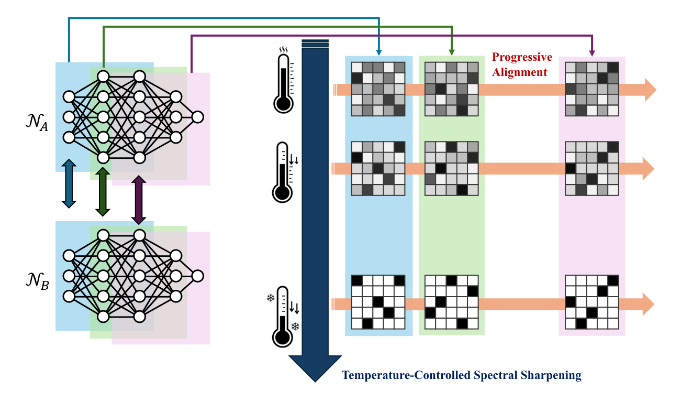
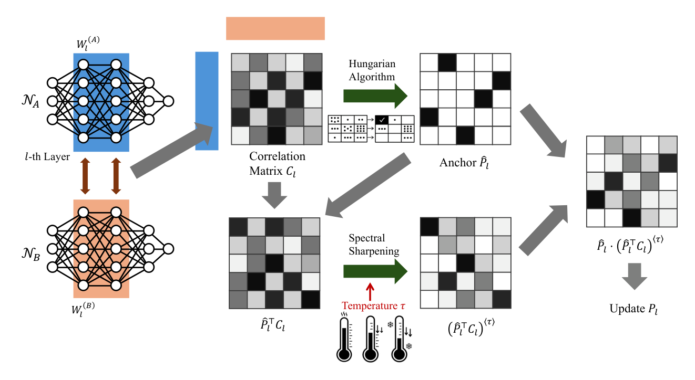
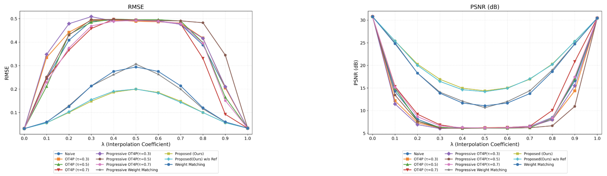
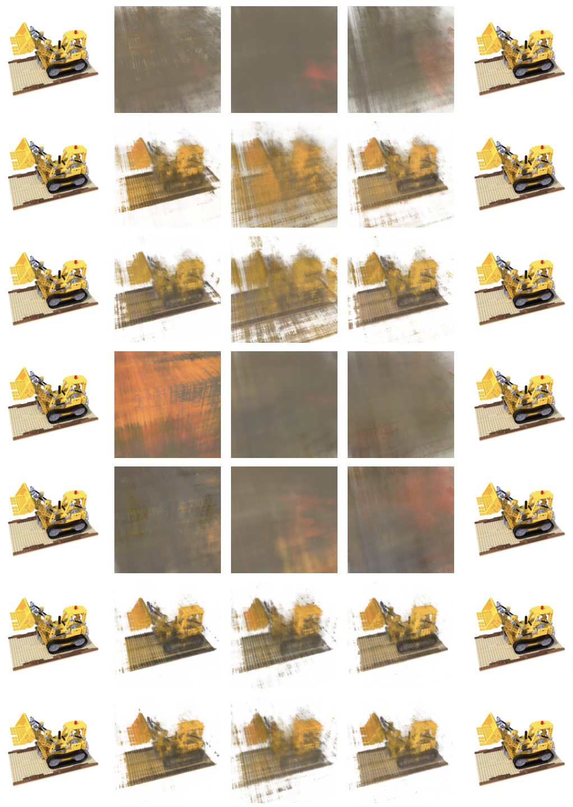

Progressive Permutation Alignment with
Temperature-Controlled Spectral Sharpening

Abstract
In implicit neural representations (INRs), 3D signals are encoded directly in network weights, making stable weight-space operations essential. However, permutation symmetry causes independently trained yet functionally equivalent models to appear distant in weight space, often inducing large loss barriers under linear interpolation. Existing neuron alignment methods either commit early to discrete matches and become trapped in inconsistent local optima or rely on computationally expensive gradient optimization over continuous relaxations, both of which are unreliable in challenging cases such as NeRF. We adopt progressive alignment, a layer-wise strategy that follows inter-layer dependencies from input to output. At each layer, a correlation matrix is estimated and aligned with a discrete anchor obtained by the Hungarian algorithm, after which temperature-controlled spectral annealing gradually sharpens the correlation structure toward a permutation matrix. This update is deterministic and lightweight, avoiding the inner-loop gradient optimization required by continuous relaxation methods. A final refinement stage further optimizes the network layer-by-layer via weight matching, starting from the aligned solution. Experiments on MLPs, CNNs, and Neural Radiance Fields (NeRFs) show that the proposed method reliably recovers neuron correspondences and achieves stable alignment across architectures. In practical experiments aligning independently trained NeRF models, our method reduces the loss barriers under weight interpolation compared with existing approaches.
Method

- For each layer, compute the correlation \(C_l\) between model A and model B given the current (soft) permutations of the neighbouring layers.
- Take the Hungarian solution \(\hat{P}_l\) as a discrete anchor and write \(M_l = \hat{P}_l^{\top} C_l = U \Sigma V^{\top}\).
- Update \(P_l \leftarrow \hat{P}_l \bigl[\, \tau\, U \Sigma^{\tau} V^{\top} + (1 - \tau)\, I \,\bigr]\) and anneal \(\tau\) over \(\{1, 0.5, 0\}\). No gradients or inner optimisation loops are involved.
- Starting from the result, refine layer by layer with weight matching.
Interpolating independently trained NeRFs
Two vanilla NeRFs trained on the same scene with different seeds are interpolated as \((1 - \lambda)\, A + \lambda\, B'\), where \(B'\) is model B after alignment. Without alignment the midpoint collapses into a uniform haze. After our alignment the barrier is lower: the object's shape and colours stay recognisable along the path, although the midpoint is still blurred.
Results
Loss barrier at the midpoint \(\lambda = 0.5\), averaged over the 8 scenes of NeRF Synthetic (10 test views each).
| Method | RMSE ↓ | PSNR ↑ |
|---|---|---|
| Naive | 0.491 | 6.21 |
| Weight Matching | 0.294 | 11.07 |
| Progressive WM | 0.306 | 10.64 |
| OT4P (\(\tau = 0.5\)) | 0.495 | 6.12 |
| Progressive OT4P (\(\tau = 0.5\)) | 0.493 | 6.17 |
| Ours w/o refinement | 0.199 | 14.22 |
| Ours | 0.199 | 14.40 |


BibTeX
@inproceedings{horioka2026progressive,
title = {Progressive Permutation Alignment with Temperature-Controlled Spectral Sharpening},
author = {Horioka, Yuta and Chiba, Naoya and Uranishi, Yuki},
booktitle = {Proceedings of the Asian Conference on Computer Vision (ACCV)},
year = {2026}
}